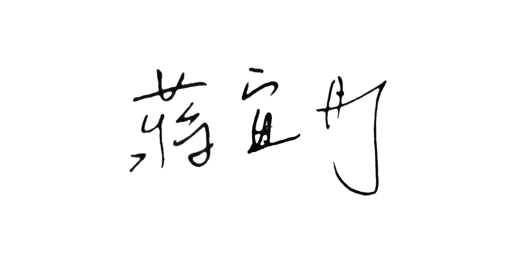

An interactive web page could read and play MIDI File, the final version will automatically choose the instrumental composition for the corresponding music script
Build With : Two.Js and MidiConvert.Js
Button for picking the midi script
Made by : I-Tung Chiang
